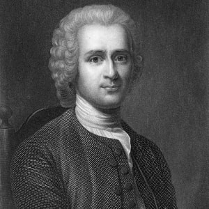
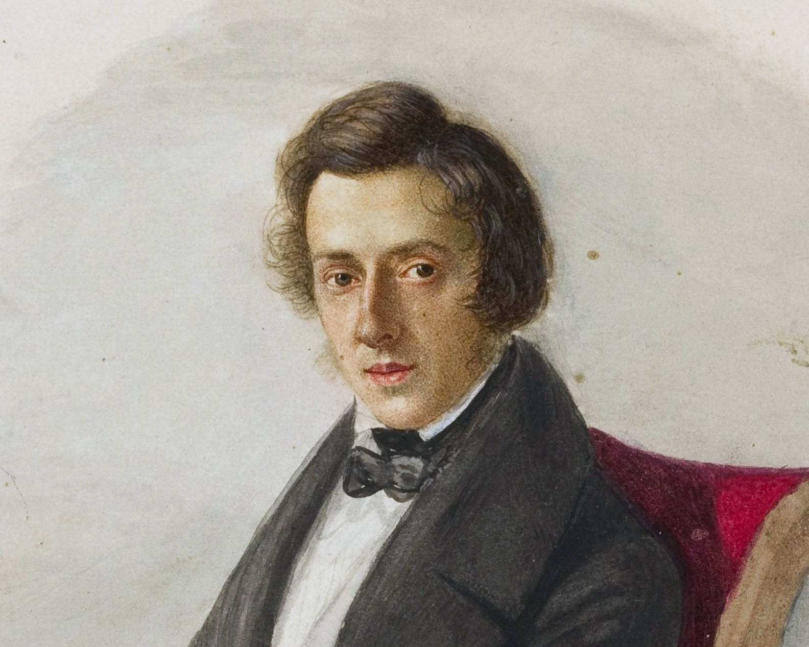

Galeria da Arte
VoltarPianistas da epoca do iluminismo
Rousseau
Jean-Jacques Rousseau , (nascido em 28 de junho de 1712, Genebra, Suíça - morreu em 2 de julho de 1778, Ermenonville, França), filósofo, escritor e teórico político, cujos tratados e romances inspiraram os líderes da Revolução Francesa e do Geração romântica .
Rousseau foi o menos acadêmico dos filósofos modernos e, em muitos aspectos, o mais influente. Seu pensamento marcou o fim do Iluminismo europeu. Ele impulsionou o pensamento político e ético para novos canais. Suas reformas revolucionaram o gosto, primeiro na música, depois nas outras artes. Ele teve um impacto profundo no modo de vida das pessoas; ele ensinou os pais a ter um novo interesse pelos filhos e a educá-los de maneira diferente. Ele promoveu a expressão de emoção em vez de contenção educada na amizade e no amor. Ele introduziu o culto ao sentimento religioso entre as pessoas que descartaram o dogma religioso . Ele abriu os olhos das pessoas para as belezas da natureza e fez da liberdade um objeto de aspiração quase universal.
A mãe de Rousseau morreu no parto, e ele foi criado por seu pai, que o ensinou a acreditar que a cidade de seu nascimento era uma república tão esplêndida quanto Esparta ou a Roma Antiga. Rousseau pai tinha uma imagem igualmente gloriosa de sua própria importância. Depois de se casar acima de sua modesta posição como relojoeiro, ele teve problemas com as autoridades civis ao brandir a espada que suas pretensões de classe alta o levaram a usar, e ele teve que ir embora de Genebra para evitar a prisão. Rousseau viveu então seis anos como um parente pobre da família de sua mãe, patrocinado e humilhado, até que ele também, aos 16 anos, fugiu de Genebra para viver a vida de um aventureiro e um católico convertido em os reinos da Sardenha e da França .
Rousseau teve a sorte de encontrar na província de Savoy, uma benfeitora, a baronesa de Warens , que lhe proporcionou refúgio em sua casa e o empregou como administrador . Ela também promoveu sua educação a tal ponto que o menino que tinha chegdoa à sua porta como um aprendiz gago que nunca havia frequentado a escola se tornou um filósofo, um estudioso e um músico.
Warens, que assim transformou o aventureiro em filósofo, erauma suíça convertida ao catolicismo que despojou o marido de seu dinheiro antes de fugir para Savoy com o filho do jardineiro para se estabelecer como uma missionária católica especializada em conversão de jovens protestantes do sexo masculino . Sua moral angustiou Rousseau, mesmo quando ele se tornou seu amante. Mas ela era uma mulher de bom gosto, inteligência e energia, que trouxe a Rousseau exatamente os talentos necessários para conquistar Paris, numa época em que Voltaire colocara na moda as idéias radicais.
Rousseau pode muito bem ter recebido a inspiração para essa crença de Warens, pois embora tivesse se tornado uma comunicante da Igreja Católica Romana , ela reteve e transmitiu a Rousseau muito do otimismo sentimental sobre a pureza humana que ela própria absorveu quando criança dos místicos pietistas protestantes que eram seus professores no cantão de Berna .
Mozart

Wolfgang Amadeus Mozart , ou Johann Chrysostom Wolfgang Amadeus Mozart nasceu em 27 de janeiro de 1756, Salzburgo, falecido em 5 de dezembro de 1791, Viena. Foi um compositor austríaco, amplamente reconhecido como um dos maiores compositores da história da música ocidental . Com Haydn e Beethoven, ele levou ao auge as conquistas da escola clássica vienense. Ao contrário de qualquer outro compositor na história da música, ele escreveu em todos os gêneros musicais de sua época e se destacou em todos. Seu gosto, seu domínio da forma e sua amplitude de expressão o fizeram parecer o mais universal de todos os compositores, no entanto, também pode ser dito que sua música foi escrita para acomodar os gostos específicos de públicos específicos.
Mozart mais comumente se autodenominava Wolfgang Amadé ou Wolfgang Gottlieb. O pai dele, Leopold vinha de uma família de boa posição, que incluía arquitetos e encadernadores. Leopold era o autor de um violino famoso manual que foi publicado no mesmo ano do nascimento de Mozart. Sua mãe, Anna Maria Pertl, nasceu em uma família de classe média ativa na administração local. Mozart e sua irmã Maria Anna foram os únicos dois de seus sete filhos a sobreviver.
O talento inicial do menino para a música foi notável. Aos três, ele estava escolhendo acordes no cravo , aos quatro tocando peças curtas, aos cinco compondo. Há anedotas sobre sua memória precisa do tom, sobre como rabiscou um concerto aos cinco anos e sobre sua gentileza e sensibilidade pois tinha medo de trombeta. Pouco antes de completar seis anos, seu pai levou a ele sua irmã, também muito talentosa, a Munique para tocar na corte da Baviera e, alguns meses depois, eles foram a Viena e foram ouvidos na corte imperial e em casas nobres.
“O milagre que Deus deixou nascer em Salzburgo” foi a descrição de Leopold de seu filho, e ele estava profundamente consciente de seu dever para com Deus, como ele viu, de chamar o milagre para o conhecimento do mundo. Em meados de 1763, ele obteve uma licença de sua posição como vice-Kapellmeister na corte do príncipe-arcebispo em Salzburgo, e a família partiu em uma viagem prolongada. Eles foram para os principais centros musicais da Europa Ocidental - Munique, Augsburg , Stuttgart, Mannheim, Mainz, Frankfurt, Bruxelas e Paris onde permaneceram durante o inverno, depois Londres onde passaram 15 meses, retornando por Haia, Amsterdã, Paris, Lyon e Suíça, e chegando de volta a Salzburgo em novembro de 1766. Na maioria dessas cidades, Mozart, e muitas vezes sua irmã, tocavam e improvisavam, às vezes na corte, às vezes em público ou na igreja.
Chopin
Frédéric Chopin , ou Frédéric François Chopin, nasceu em 1 de março de 1810 Żelazowa Wola, Ducado de Varsóvia e morreu em 17 de outubro 1849, Paris , França. Foi um Compositor e pianista francês polonês do período romântico , mais conhecido por suas peças solo para piano e seus concertos para piano. Embora tenha escrito poucas obras para piano, muitas delas breves, Chopin é considerado um dos maiores poetas tonais da música em razão de sua imaginação superfina e habilidade meticulosa .
O pai de Chopin, Nicholas, um emigrado francês na Polônia , foi contratado como tutor para várias famílias aristocráticas, incluindo os Skarbeks, em Żelazowa Wola, um de cujos parentes mais pobres ele se casou. Quando Frédéric tinha oito meses, Nicholas tornou-se professor de francês no liceu de Varsóvia. O próprio Chopin frequentou o liceu de 1823 a 1826.
Toda a família tinha inclinações artísticas e, mesmo na infância, Chopin sempre ficava estranhamente comovido ao ouvir sua mãe ou irmã mais velha tocando piano. Aos seis anos, ele já tentava reproduzir o que ouvia ou inventar novas melodias. No ano seguinte, ele começou a ter aulas de piano com o “jovem” de 61 anos Wojciech Zywny, um músico versátil com um senso de valores astuto . A instrução simples de Zywny em tocar piano foi logo deixada para trás por seu aluno, que descobriu por si mesmo uma abordagem original do piano e foi autorizado a se desenvolver sem ser impedido por regras acadêmicas e disciplina formal .
Chopin se viu convidado desde muito jovem para tocar em saraus particulares e, aos oito anos, fez sua primeira aparição pública em um concerto de caridade. Três anos depois, ele se apresentou na presença do czar russo Alexandre I, que estava em Varsóvia para abrir o Parlamento. Aos sete, ele escreveu um Polonaise em Sol menor , que foi impressa, e logo depois uma marcha sua apelou ao grão-duque russo Constantino, que mandou marcar para sua banda militar tocar no desfile. Seguiram-se outras polonaises, mazurkas, variações, ecossaises e um rondo , com o resultado de que, quando tinha 16 anos, a sua família o matriculou no recém-formado Conservatório de Música de Varsóvia. Esta escola foi dirigida pelo compositor polonês Joseph Elsner, com quem Chopin já estudava teoria musical.
Nenhum professor melhor poderia ter sido encontrado, pois, ao mesmo tempo em que insistia em um treinamento tradicional, Elsner, um compositor com inclinações românticas, percebeu que a imaginação individual de Chopin nunca deve ser controlada por exigências puramente acadêmicas. Mesmo antes de ficar sob os olhos de Elsner, Chopin já havia demonstrado interesse pela música folclórica do interior da Polônia e recebeu aquelas impressões que mais tarde deram um colorido nacional inconfundível a sua obra. No conservatório, ele foi submetido a um sólido curso de instrução em harmonia e composição. Ao tocar piano, ele desenvolveu um alto grau de individualidade.